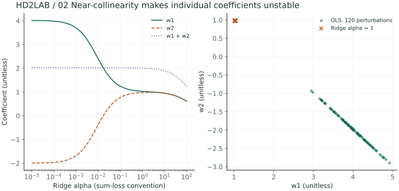
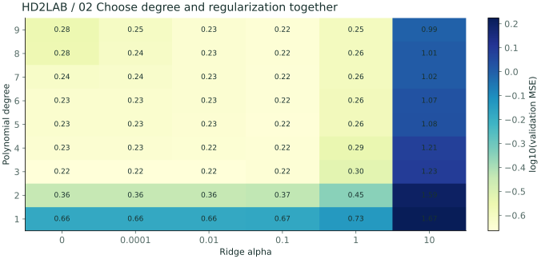
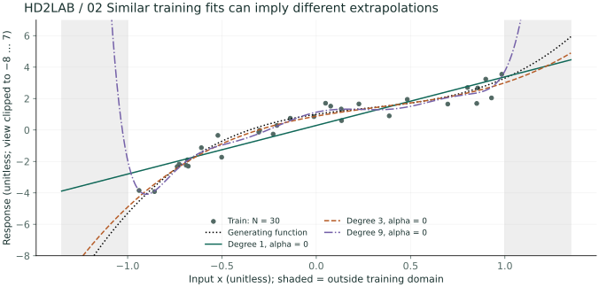
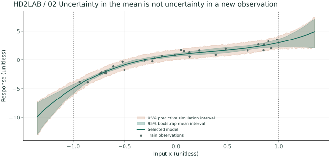

01 / 부하가 늘어날수록 생기는 지연
가상 저장장치에 요청이 몰리면 응답 지연이 늘어난다. 부하 x는 0부터 1 사이의 무차원 값, 지연 y의 단위는 ms다. 생성 과정은 3 + 2x + 7x³에 평균 0인 가우시안 잡음을 더한 것이다. 시스템 측정값이 아니라 비선형성을 관찰하기 위한 합성 데이터다.
실험에서는 생성식 대신 여러 차수의 회귀식을 학습한다. 학습 오차, 검증 오차, 범위 밖 예측을 비교하면 곡선을 잘 그리는 것과 새 관측을 잘 예측하는 것의 차이가 드러난다.
02 / 데이터가 많으면 방정식은 어긋난다
직선 y = b + wx에 관측을 대입하면 b, w에 관한 연립방정식이 생긴다. 세 관측 (0,2), (1,3), (2,5)는 하나의 직선 위에 정확히 놓이지 않는다. 모든 방정식을 만족시키는 대신 잔차 제곱합을 최소화한다.
θ̂ = arg minθ ‖Φθ − y‖²
세 점의 최소제곱 해는 b = 11/6, w = 3/2다. 예측은 [11/6, 10/3, 29/6], 잔차 y − ŷ는 [1/6, −1/3, 1/6]이다. 기울기나 절편을 조금 바꿔도 제곱합이 더 작아지지 않는 지점이다.
03 / 미분하고 투영으로 읽기
J = (Φθ − y)ᵀ(Φθ − y)를 전개하면 θᵀΦᵀΦθ − 2θᵀΦᵀy + yᵀy다. θ로 미분한 기울기를 0으로 놓으면 정상방정식이 나온다.
ΦTΦθ̂ = ΦTy
θ̂ = (ΦTΦ)−1ΦTy (열이 선형독립일 때)
첫 식은 잔차가 Φ의 모든 열과 직교한다는 뜻이다. 예측 벡터는 y를 Φ의 열공간으로 정사영한 결과다. 이 관점은 PCA 투영과 연결된다.
구현에서 직접 역행렬을 구할 필요는 없다. ΦᵀΦ는 조건수를 제곱시켜 수치 오차를 키울 수 있다. 브라우저 구현은 Householder QR로 계산하고 Python 예제는 NumPy의 최소제곱 함수를 사용한다.
04 / 선형 모델로 곡선을 만들기
입력을 [1,x,x²,…,xᵈ]로 확장하면 계수의 선형결합으로 곡선을 만들 수 있다. 여기서 “선형”은 학습할 파라미터가 어떻게 들어가는지를 가리킨다. 특징 변환은 모델이 사용할 함수의 재료를 정한다.
ŷ = Σj=0d θjzj
실험은 입력을 [−1,1]로 옮겨 기저의 수치 크기 차이를 줄인다. 차수 d는 1~9다. 이것이 고차 다항식의 모든 불안정성을 해결하지는 않는다. 학습 범위 밖에서는 기저 값이 빠르게 커질 수 있다.
import numpy as np
rng = np.random.default_rng(1729)
x = rng.uniform(0, 1, 32)
y = 3 + 2*x + 7*x**3 + .7*rng.normal(size=x.size)
Phi = np.polynomial.polynomial.polyvander(2*x - 1, 3)
coef, _, rank, _ = np.linalg.lstsq(Phi, y, rcond=None)
query = np.array([.25, .75, 1.15])
pred = np.polynomial.polynomial.polyval(2*query - 1, coef)
print("rank:", rank, "prediction (ms):", pred)05 / 정규화와 과적합
관측이 적거나 특징이 비슷하면 계수가 크게 흔들린다. L2 정규화는 계수 크기에 비용을 부여한다. 절편은 벌점에서 제외한다. α가 커질수록 기울기 계수에 축소 압력이 커지며 매우 큰 α에서는 평균 예측에 가까워진다.
브라우저는 √α 배의 벌점 행렬을 아래에 붙인 확장 최소제곱 문제를 QR로 푼다. 특징 스케일이 달라지면 같은 α의 의미도 달라진다. 특징 변환을 고정한 상태에서 비교해야 한다.
| 변경 | 확인할 것 | 해석의 제한 |
|---|---|---|
| 차수 증가 | 학습·검증 오차 차이 | 검증 오차는 단조롭게 변하지 않음 |
| 표본 수 증가 | 곡선 안정성 | 같은 분포라는 가정 필요 |
| 정규화 증가 | 곡선·계수 변화 | 과도하면 편향 증가 |
| 외삽 | x < 0 또는 x > 1의 곡선 | 검증 오차는 [0,1]에서 측정 |
06 / 실험과 이해 확인
- 기본 3차 모델에서 생성식과 예측 곡선의 차이를 확인한다.
- 표본 수를 12로 낮추고 1차·3차·9차를 비교한다. 외삽도 함께 본다.
- 같은 데이터에서 정규화를 높이고 학습 오차와 검증 오차를 비교한다.
검증 데이터는 별도 시드의 120개 관측이다. 같은 설정은 같은 데이터를 만든다. 이 탐색으로 최종 테스트 성능을 주장하지 않는다.
3차 생성식에 3차 모델인데 검증 오차가 0이 아닌 이유는?
계수는 유한한 잡음 표본으로 추정되고 검증 목표에도 잡음이 있다. 생성식을 정확히 알아도 관측 목표에 대한 기대 오차는 잡음 분산만큼 남는다.
차수가 높으면 학습 오차는 반드시 엄격히 감소하는가?
정규화 없이 정확한 최소제곱 해를 구한다면 중첩된 기저에서 최솟값은 증가하지 않지만 같을 수 있다. 정규화된 해나 수치 오차에는 이 진술을 그대로 적용하지 않는다.
심화 A / 흔들리는 계수를 SVD와 Ridge로 설명하기
풀어볼 문제 서로 거의 같은 센서 두 개를 넣었더니 계수의 부호와 크기가 크게 흔들린다. 예측까지 망가진 것일까?
시드 2202, N=70에서 x₁~N(0,1), x₂=x₁+0.015ε₂, y=1+2x₁+0.4εᵧ를 만든다. 잡음들은 독립 표준정규다. 절편에는 벌점을 주지 않는다. 거의 같은 열은 동일한 예측을 여러 계수 조합으로 설명할 수 있게 한다.
σⱼ²/(σⱼ²+α): OLS 대비 해당 방향의 축소율
- 중심화한 두 특징의 특잇값은 12.460, 0.093다. OLS는 작은 특잇값 방향의 잡음을 1/σ만큼 증폭한다.
- 같은 X를 유지하고 y에 표준편차 0.05의 작은 잡음을 120번 더한다. 이는 표본 부트스트랩이 아니라 응답 교란에 대한 조건부 민감도 실험이다.
- OLS의 w₁ 표준편차는 0.417, Ridge α=1에서는 0.004다. OLS에서도 w₁+w₂ 표준편차는 0.006로 작다.
- 관측이 놓인 x₁≈x₂ 방향에서는 계수 합이 예측을 좌우한다. 각각의 계수를 원인 효과로 해석하거나 x₁과 x₂가 크게 달라지는 영역에 외삽하면 문제가 드러난다.

Ridge가 작은 특잇값 방향을 줄이면 참 신호도 없어질 수 있을까?
그럴 수 있다. 정규화는 분산을 줄이는 대신 편향을 더한다. 작은 특잇값이 무조건 무의미하다는 뜻은 아니며 α는 검증 성능과 필요한 해석에 맞춰 선택한다.
심화 B / 차수와 정규화를 함께 선택하기
풀어볼 문제 차수를 높인 뒤 α만 고르는 대신 차수×α 격자를 비교하고, 선택에 쓰지 않은 테스트를 남겨 보자.
새 독립 표본에서 x~Uniform(−1,1), y=1+1.8x−2x²+2.5x³+ε, ε~N(0,0.45²)를 만든다. 훈련 30개, 검증 240개, 테스트 400개다. 차수 1~9와 α∈{0,0.0001,0.01,0.1,1,10}의 54개 후보를 같은 검증 집합으로 비교한다. 순차 난수는 regression_experiment 함수의 시드 2202에서 재현한다.
- 기저는 [1,x,…,xᵈ]로 고정한다. 각 후보를 훈련에서만 맞추고 검증 MSE를 행렬 한 칸에 적는다.
- 이 실행의 최소값은 차수 3, α=0, 검증 MSE 0.216다. 정규화가 항상 필요하다고 가정하지 않고 α=0도 후보로 둔다.
- 선택한 모델을 그대로 고정하여 독립 테스트에서 MSE 0.240를 얻는다. 여기서는 검증을 합쳐 재학습하지 않았으므로 그림과 테스트가 같은 계수에 대응한다.
- 훈련 범위 밖의 예측은 점선 생성식과 비교하되 실제 문제에서는 그 생성식을 모른다. 검증 성능이 좋아도 외삽 신뢰를 보장하지 않는다.


계산 코드의 핵심 펼치기
심화 Python의 해당 함수에서 발췌한 계산 흐름입니다. 전체 데이터 생성·보조 함수는 아래 다운로드에 있습니다.
degrees = range(1, 10)
alphas = [0, .0001, .01, .1, 1, 10]
errors = np.empty((9, 6))
for i, degree in enumerate(degrees):
train_basis = np.polynomial.polynomial.polyvander(xp, degree)
valid_basis = np.polynomial.polynomial.polyvander(xv, degree)
for j, alpha in enumerate(alphas):
w = ridge(train_basis, yp, alpha)
errors[i, j] = np.mean((yv - valid_basis @ w) ** 2)
# errors가 가장 작은 후보를 고른 뒤 테스트를 단 한 번 평가한다.심화 C / 부트스트랩 구간과 예측 구간 구분하기
풀어볼 문제 곡선 주변의 95% 구간이 좁으면 새 관측도 그 안에 95% 들어올까?
앞에서 고른 차수와 α를 고정한다. 훈련 행을 복원추출하여 30개씩 350번 재구성하고, 매번 모델을 새로 맞춘다. 각 x에서 350개 예측의 2.5%·97.5% 분위수를 구하면 평균 함수 추정의 부트스트랩 구간을 얻는다.
여기서는 σ=0.45를 아는 합성 실험
- 부트스트랩마다 (xᵢ,yᵢ)를 행 단위로 함께 뽑는다. x와 y를 따로 뽑으면 관계가 깨진다.
- 평균 예측의 분위수 구간은 계수 추정의 흔들림을 보여 준다. 새 관측의 잡음까지 포함하지 않는다.
- 각 부트스트랩 예측에 독립 N(0,0.45²) 잡음을 더한 뒤 분위수를 다시 구한다. 주황 예측 시뮬레이션 구간이 대체로 더 넓은 이유다.
- 이 구간은 선택된 차수·α에 조건부다. 모델 선택 불확실성, 잘못된 생성식, 미지의 잡음 분산은 반영하지 않는다. 350회 분위수 추정에도 몬테카를로 오차가 있으며 빈도적 95% 포함률을 검증한 것은 아니다.

350회를 3,500회로 늘리면 평균 함수 자체의 통계적 불확실성도 1/√10로 줄어들까?
아니다. 분위수 계산의 몬테카를로 오차가 줄어들 뿐 원 훈련 표본 30개가 제공하는 정보는 같다. 함수 추정 불확실성을 줄이려면 유익한 관측을 더 모으거나 적절한 구조 가정을 추가해야 한다.
직접 재현하고 조건 바꾸기
위 그림은 이 장의 심화 Python 실험을 사전 계산한 결과입니다. Notebook에는 7개 장의 실행 코드와 28개 그림 출력이 들어 있습니다. 계산만 실행하려면 NumPy, 그림을 다시 생성하려면 Matplotlib도 필요합니다.
Python 파일 두 개를 같은 폴더에 두세요. 계산 파일의 --chapter 2 옵션으로 이 장만 실행할 수 있습니다. 그림
파일의 --output ./figures 옵션은 28개 SVG를 생성합니다.
더 읽기: 관련 개념의 참고자료 · 용어와 기호